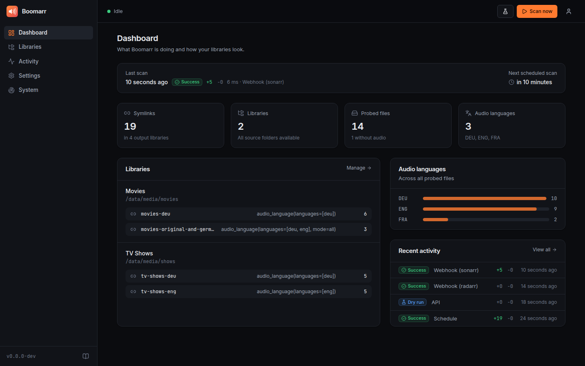
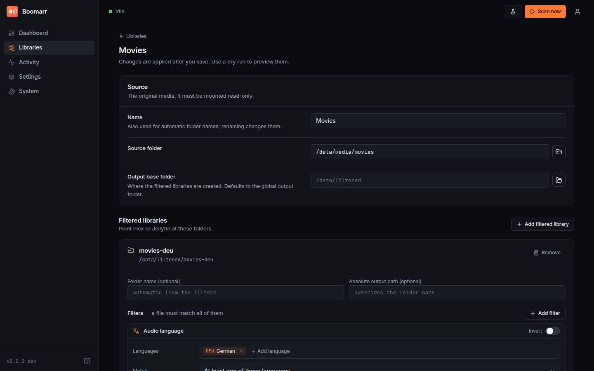

Web UI & security¶
boomarr watch serves a web interface on port 9797. Everything in
boomarr.yml can be configured there, and it shows what Boomarr is doing
right now: scan progress, the history of every scan with the links it
created or removed, health checks and live logs.

- First start
- What you can do in the UI
- How settings are stored
- Authentication
- Single sign-on (OpenID Connect)
- Reverse proxies
- API key, webhooks and the REST API
- Security notes
First start¶
Open http://<host>:9797/. Boomarr asks you to create the admin account.
- From a private network (192.168.x.x, 10.x.x.x, 172.16–31.x.x, IPv6 ULA/link-local, localhost) that's all.
- From anywhere else you also need the setup token printed in the log, so nobody can claim a freshly started instance that is reachable from the internet:
docker logs boomarr 2>&1 | grep "Setup token"
To skip the setup page (Kubernetes, Ansible…) set BOOMARR_USERNAME and
BOOMARR_PASSWORD. The account is created or updated on every start.
What you can do in the UI¶
| Page | |
|---|---|
| Dashboard | Current scan with live progress, last/next scan, symlink and cache statistics, audio languages found, health warnings. Scan now, Dry run and Cancel are always one click away (top bar). |
| Libraries | Add and edit libraries: folder picker for the source/output paths, one or more filtered libraries per source with a visual filter builder (audio language with search, resolution, video/audio codec, channels, invert), and a live preview of the resulting output folder. |
| Activity | Every scan (schedule, webhook, manual, dry run) with outcome, duration and counts. Click a scan to see exactly which links were created or removed. |
| Settings | General, scanning (schedule, debounce, removal guard), probers (FFprobe, Sonarr, Radarr) and media servers (Plex, Jellyfin, Emby) with a Test button, notifications (Apprise, with test), security, web server and logging. |
| System | Version and paths, health checks, live logs with filter/search/download, configuration backup and restore. |
Changes are collected until you press Save changes in the bar at the
bottom, then validated, written and applied immediately, without a restart.
Only listener settings of the web server (host, port, url_base,
trusted_proxies) need a restart, which the UI tells you about.

How settings are stored¶
boomarr.yml stays the single source of truth. The UI reads and writes that
file, so you can still edit it by hand, keep it in git or deploy it with a
ConfigMap:
- Writes are validated first (the same rules as on startup), atomic
and keep the previous version as
boomarr.yml.bak. - If the file changed on disk after you opened the page, saving is refused instead of silently overwriting (optimistic locking).
- Secrets (API keys, tokens, notification URLs, the OIDC client secret) are never sent to the browser; the UI only shows that a value is set and lets you replace it.
- Values that come from environment variables or CLI options are shown with an env badge, cannot be changed in the UI and are never written to the file.
- If the file is read-only (e.g. a Kubernetes ConfigMap), the UI shows the settings but does not allow changes.
- The UI rewrites the file in a minimal form (only non-default values); comments of a hand-written file are not preserved.
Login data lives separately in auth.json (mode 0600) next to the config:
the password hash (Argon2id), the generated API key and the key used to sign
sessions. Keep it private; deleting it resets the account (Boomarr asks for
a new one).
Backups: System → Backup downloads boomarr.yml and restores an
uploaded file after validating it.
Authentication¶
auth:
method: forms # forms | external | none
local_bypass: false # no login from private networks
session_days: 30 # how long "keep me signed in" lasts
external_header: Remote-User
| Method | |
|---|---|
forms (default) |
Login page with the local admin account and/or single sign-on. |
external |
Your reverse proxy authenticates users (Authelia, Authentik or oauth2-proxy forward auth, Cloudflare Access …) and passes the user name in external_header. The header is only trusted from server.trusted_proxies, so it cannot be spoofed by clients that reach Boomarr directly. |
none |
No authentication. Only use this behind another authentication layer. |
local_bypass: true skips the login for requests from private addresses,
like "Authentication required: Disabled for local addresses" in the *arr
apps.
Sessions are signed, HttpOnly, SameSite=Lax cookies (Secure over
HTTPS). Changing the password or Sign out all sessions (Settings →
Security) invalidates every existing session. Five failed logins from one
address lock that address out for five minutes.
Single sign-on (OpenID Connect)¶
Works with any OpenID Connect provider: Authentik, Authelia, Keycloak, Pocket ID, Zitadel, Kanidm, Google, Microsoft Entra ID …
auth:
method: forms
oidc:
enabled: true
name: Authentik # button label
issuer: https://auth.example.com/application/o/boomarr/
client_id: boomarr
client_secret: change-me # omit for public clients
scopes: [openid, profile, email]
username_claim: preferred_username
groups_claim: groups
allowed_groups: [media-admins] # empty: everyone the provider lets in
allowed_users: [] # user names or e-mail addresses
auto_login: false # skip the login page
disable_password_login: false # SSO only
Register https://<boomarr>/api/v1/auth/oidc/callback as redirect URI (the
exact value is shown in Settings → Security). Boomarr uses the authorization
code flow with PKCE, verifies the ID token signature against the provider's
JWKS as well as issuer, audience, expiry and nonce, and falls back to the
userinfo endpoint for missing claims.
Keep a local account (don't enable disable_password_login right away)
until SSO works.
Reverse proxies¶
Boomarr works behind any reverse proxy, also under a sub path:
server:
url_base: /boomarr # https://example.com/boomarr/
trusted_proxies: [172.16.0.0/12] # your proxy / Docker network
trusted_proxies makes Boomarr use X-Forwarded-For and
X-Forwarded-Proto from those addresses (correct client address for
local_bypass and the login throttle, secure cookies behind TLS). Live
updates use server-sent events: disable response buffering for
/api/v1/events if your proxy buffers (nginx: proxy_buffering off;,
Boomarr already sends X-Accel-Buffering: no).
location /boomarr/ {
proxy_pass http://boomarr:9797;
proxy_set_header Host $host;
proxy_set_header X-Forwarded-For $proxy_add_x_forwarded_for;
proxy_set_header X-Forwarded-Proto $scheme;
proxy_buffering off;
}
API key, webhooks and the REST API¶
Boomarr generates an API key on first start (Settings → Security; show,
copy, regenerate). A fixed key can be set with server.api_key or
BOOMARR_API_KEY. It is accepted as X-Api-Key header, ?apikey= query
parameter, Authorization: Bearer <key> or as the password of HTTP basic
auth, which is what Sonarr/Radarr webhooks use
(setup).
Everything the UI does is a REST call under /api/v1/ and works with the
API key too; the OpenAPI description is served at /api/openapi.json.
curl -X POST -H "X-Api-Key: $KEY" http://boomarr:9797/api/v1/scans \
-H 'Content-Type: application/json' -d '{"dry_run": true}'
curl -H "X-Api-Key: $KEY" "http://boomarr:9797/api/v1/scans?limit=5"
Security notes¶
- Mutating requests from the browser require an
X-Requested-Withheader in addition to theSameSitesession cookie (CSRF protection); API-key requests are not affected. - Responses carry a strict
Content-Security-Policy(no inline scripts, no third-party resources),X-Content-Type-Optionsand a restrictiveReferrer-Policy/Permissions-Policy. The UI loads no external fonts, scripts or trackers. /healthis always public (for probes);/metricsis public unlessserver.metrics_authis enabled.- The folder picker lists directories (not files) and is only available to signed-in users.
- Report vulnerabilities privately, see SECURITY.md.